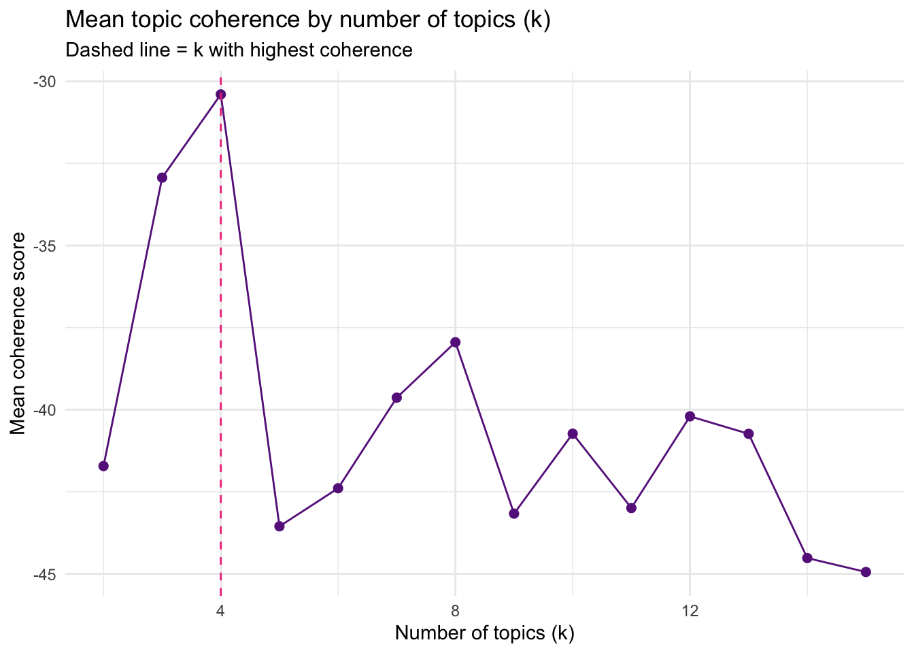
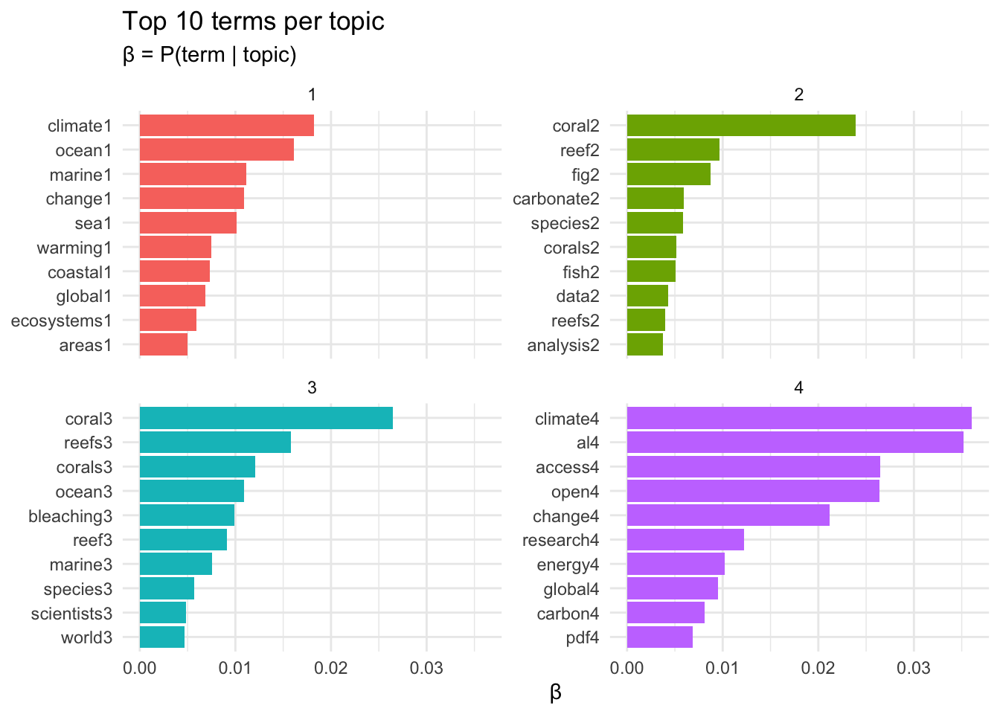
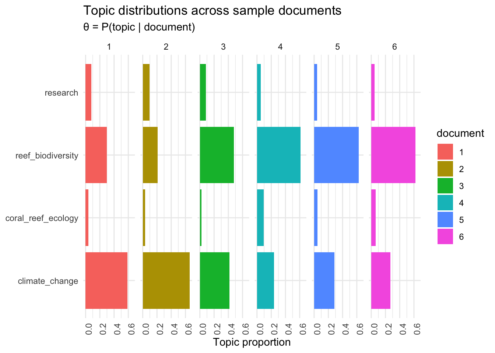

library(LexisNexisTools)
library(quanteda)
library(tm)
library(topicmodels)
library(topicdoc)
library(tidyverse)
library(tidytext)
library(reshape2)
library(tictoc)
library(LDAvis)
library(tsne)
library(servr)lab4_hw
Load in Data
#tbl <- read_csv(here::here("week5", "Nexis", "ocean-acidification"))
pre_files <- list.files(
path = here::here("week5", "Nexis", "ocean-acidification"), # update to your folder
pattern = "\\.docx$",
full.names = TRUE,
recursive = TRUE,
ignore.case = TRUE
)
pre_dat <- lnt_read(pre_files)
pre_meta_df <- pre_dat@meta
pre_articles_df <- pre_dat@articles
pre_paragraphs_df <- pre_dat@paragraphs
df <- tibble(
date = pre_meta_df$Date,
headline = pre_meta_df$Headline,
id = pre_meta_df$ID,
text = pre_articles_df$Article,
source = pre_meta_df$Newspaper
)1. Build and clean my corpus
Build Corpus
tbl <- df
corpus <- corpus(x = tbl,
textg_field = "text")Tokenize and Clean
# Stop words
add_stops <- c(quanteda::stopwords("en",
source="smart"),
# remove other meta data words
"said", "says", "told", "according", "discuss", "because", "where", "vol", "pg", "newstex")
# Tokenize
toks <- tokens(corpus,
remove_punct = TRUE,
remove_numbers = TRUE,
remove_symbols = TRUE) %>%
# Normalize
tokens_tolower()
# Remove stop words
toks1 <- tokens_select(toks, pattern = add_stops, selection = "remove")Build the Document-Feature Matrix
# Creating a dfms
dfm1 <- dfm(toks1)
dfm2 <- dfm_trim(dfm1, min_docfreq = 2) # Reduce by limiting min values of feature's doc frequency
# Remove empty rows b/c LDA will error on these
sel_idx <- slam::row_sums(dfm2) > 0 # select no empty rows
dfm <- dfm2[sel_idx,] # subset2. Select K using multiple critera
Step 1: Initial Model (Theory-Driven k)
Run 3 models (K = 3)
# Define Hyperparameter
k <- 3
# Model
topicModel_k3 <- LDA(dfm, # matrix
k,
method = "Gibbs", # Gibbs is default (always do this)
control = list(iter = 100, # Number of iterations
verbose = 25, # Tell us after every 25 iterations
seed = 321
))K = 3; V = 11186; M = 159
Sampling 100 iterations!
Iteration 25 ...
Iteration 50 ...
Iteration 75 ...
Iteration 100 ...
Gibbs sampling completed!Inspect the Posterior Distributions
result <- posterior(topicModel_k3)
beta <- result$terms
theta <- result$topcis
cat("phi dimensions (topics × vocab):", dim(beta), "\n")phi dimensions (topics × vocab): 3 11186 # Top 10 terms per topic
terms(topicModel_k3, 10) Topic 1 Topic 2 Topic 3
[1,] "climate" "ocean" "coral"
[2,] "al" "coral" "reef"
[3,] "access" "marine" "fig"
[4,] "open" "reefs" "species"
[5,] "change" "corals" "carbonate"
[6,] "research" "ecosystems" "fish"
[7,] "global" "sea" "corals"
[8,] "energy" "global" "reefs"
[9,] "carbon" "climate" "data"
[10,] "environmental" "bleaching" "restoration"K=3 Model Results/Groups:
There are 3 topics (k=3):
climate, al, access, open, change
ocean, coreal, marine, reefs, corals
coral, reef, fig, species, carbonate
(The first words in each list are the most probable word for each topic /highest probability of word occurrence)
Step 2: Selecting k with Coherence Scores
To select the best K, will run the model over a range of Ks. The coherence scores measure how related the words within a generated topic. Therefore, the score will give use a good idea on an optimal K.
# Fit model for a range of k values
k_values <- seq(2, 15, by = 1)
tic() # Timerstart
# Running the model
coherence_results <- map_dfr(k_values, function(k){ # Loop thru Ks
# Run the model
m <- LDA(dfm, k = k,
method = "Gibbs",
control = list(iter = 300,
seed = 231,
verbos = 0))
# Calculate coherence
coh <- mean(topic_coherence(m, dfm))
tibble(k=k, coherence = coh)
})
toc() # Timer end 42.511 sec elapsedNow, lets plot the coherence vs K!
ggplot(coherence_results, aes(x = k, y = coherence)) +
geom_line(color = "darkorchid4") +
geom_point(color = "darkorchid4", size = 2) +
geom_vline(xintercept = coherence_results$k[which.max(coherence_results$coherence)], # Best coh score
linetype = "dashed", color = "violetred2") +
labs(title = "Mean topic coherence by number of topics (k)",
subtitle = "Dashed line = k with highest coherence",
x = "Number of topics (k)",
y = "Mean coherence score") +
theme_minimal()
Optimization metrics: The peak coherence (the “elbow”) is at K = 4 with a K of 3 following closely behind. Interestingly, a K of 5 drops significantly, meaning the region is unstable.
Theory: Possible ocean acidification themes: coral reef biology, ocean chemistry, climate policy/governance, and marine organism impact.
Interpretability: With a K =3 (from Step 1), topics 2 and 3 are practically the same groupings. Due to this heavy overlap, K=3 is under-splitting meaning a K of 4 could be favorable.
The coherence score shows K=4 being favorable. Four ocean acidification themes come to mind. Lastly, step 1’s initial model with a K of 3 is under-splitting. Thus, a K of 4 seems to be optimal.
3. Fit your final model and visualize top terms
Step 3: Fit the Selected Model
# Updated with the peak coherence K (k = 5)
k <- 4
topicModel_k_select <- LDA(dfm, k,
method = "Gibbs",
control = list(iter = 1000,
verbose = 25,
seed = 321))Show the 4 topics:
tmResult <- posterior(topicModel_k_select)
terms(topicModel_k_select, 10) Topic 1 Topic 2 Topic 3 Topic 4
[1,] "climate" "coral" "coral" "climate"
[2,] "ocean" "reef" "reefs" "al"
[3,] "marine" "fig" "corals" "access"
[4,] "change" "carbonate" "ocean" "open"
[5,] "sea" "species" "bleaching" "change"
[6,] "warming" "corals" "reef" "research"
[7,] "coastal" "fish" "marine" "energy"
[8,] "global" "data" "species" "global"
[9,] "ecosystems" "reefs" "scientists" "carbon"
[10,] "areas" "analysis" "world" "pdf" # Values per topic per text
theta <- tmResult$topics
# Values per vocab word
beta <- tmResult$terms
# Vocab words
vocab <- colnames(beta)Step 4: Visualize Top Terms per Topic
Visualizing the 5 topics and the most probable words for each topic.
topics <- tidy(topicModel_k_select, matrix = "beta")
top_terms <- topics |>
group_by(topic) |>
slice_max(beta, n = 10) |>
ungroup() |>
arrange(topic, -beta)
top_terms |>
mutate(term = reorder_within(term, beta, topic, sep = "")) |>
ggplot(aes(term, beta, fill = factor(topic))) +
geom_col(show.legend = FALSE) +
facet_wrap(~ topic, scales = "free_y") +
scale_x_reordered() +
coord_flip() +
labs(title = "Top 10 terms per topic",
subtitle = "β = P(term | topic)",
x = NULL, y = "β") +
theme_minimal()
Step 5: Name the Topics
Naming the topics
Assign a descriptive name to each topic (not just the concatenated top terms).
# Option 1: auto-name from top 5 terms
# topic_words <- terms(topicModel_k_select, 5)
#topic_names <- apply(topic_words, 2, paste, collapse = " ")
#Option 2: Replace topic names with interpretive labels after inspection
topic_names <- c("climate_change", "coral_reef_ecology",
"reef_biodiversity", "research")
topic_names[1] "climate_change" "coral_reef_ecology" "reef_biodiversity"
[4] "research" Step 6: Document-Topic Distributions (θ)
Distribution of topics on Documents
Plot θ for the first 6 document.
# Grabbing first 6 documents
example_ids <- c(1:6)
n <- length(example_ids)
example_props <- theta[example_ids, ]
colnames(example_props) <- topic_names
# Value per topic per document
viz_df <- melt(cbind(data.frame(example_props),
document = factor(1:n)),
variable.name = "topic",
id.vars = "document")
# Plot
ggplot(data = viz_df, aes(topic, value, fill = document)) +
geom_bar(stat = "identity") +
theme_minimal() +
theme(axis.text.x = element_text(angle = 90, hjust = 1)) +
coord_flip() +
facet_wrap(~ document, ncol = n) +
labs(title = "Topic distributions across sample documents",
subtitle = "θ = P(topic | document)",
x = NULL, y = "Topic proportion")
Step 7: Interactive Visualization with LDAvis
svd_tsne <- function(x) tsne(svd(x)$u)
json <- createJSON(
phi = tmResult$terms,
theta = tmResult$topics,
doc.length = rowSums(dfm),
vocab = colnames(dfm),
term.frequency = colSums(dfm),
mds.method = svd_tsne,
plot.opts = list(xlab = "", ylab = "")
)
#serVis(json)LDAvis: do the topic circles separate well, or do they overlap heavily?
- The circles do not overlap at all (which is surprising). Each circle is on opposite sides of the graph with no overlap.
- The topics are quite proportional with each topic holding about 20-30% of the tokens.
Interpret your topics:
Topic 1 focus on broad impacts of climate change on oceans and coastal environments. Words like “change”, “ocean”, and “warming” led me to this conclusion.
Topic 2 focus on coral reef ecosystems, specifically their biological and chemical dynamics. Words like “carbonate” and “fish” led me to this conclusion. “Analysis” and “data” suggest a research-oriented approach to studying coral reef ecosystems.
Topic 3 focus on coral bleaching and its effects on reef biodiversity and marine life. Words like “bleaching”, “coral”, and “species” led me to this conclusion. “Scientists” and “world” suggest a global scientific concern or international research attention surrounding coral reef decline.
Topic 4 appear to combine climate change, carbon, energy, and scientific communication . Words like “research”, “change”, and “carbon” led me to this conclusion.
Words that surprised me: fig, data, analysis, al, pdf. These metadata words should have been taken out at the beginning as they are irrelative to the thematic content. “Fig” is most likely due to figure captions. I originally thought “al” was “AI” miss-spelled. However, I think “al” refers to citations “et al”. The thematically scientific words are not surprising.